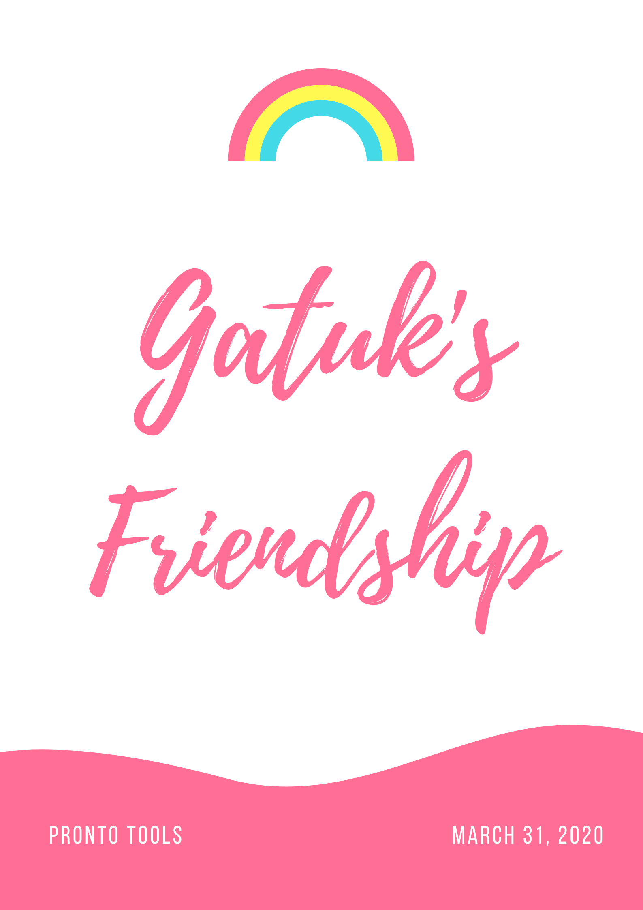
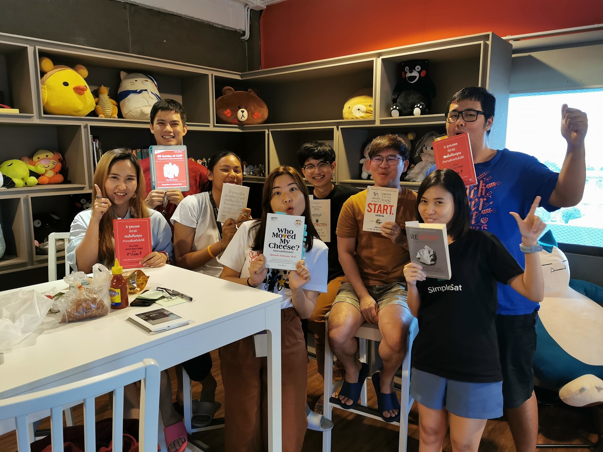

Forever ❤️


สวัสดีค่ะ พี่กระตั๊ก (พี่เลี้ยงงงง...จำเป็น)
มันอยู่ภายใจเป็นหมื่นล้านคำ ... บอกให้เธอฟัง ก็พอจะได้สัก 2 3 คำ
อยากจะขอบคุณพี่ที่รับฟังความคิดเห็นของมายด์นะคะ พี่ทำให้มายด์พูดเยอะขึ้น
แล้วก็พี่ทำให้มายด์อยากพิมพ์ดีดได้เร็วขึ้น ขอบคุณตัวอย่างในการรีวิวโค้ดคือ
ชอบมากค่ะ ตอนที่พี่มา รีวิว ให้ ทำให้รู้ว่า อ๋อเราเขียนอย่างงี้ได้นี่หว่า
ขอบคุณสำหรับความรู้ในการเขียน ATDD ได้เข้าใจว่า มันเอาใช้ยังไงก็เพราะพี่เลยค่ะ
สุดท้ายนี้ พี่ไปคงเหงา 😥
โชคดีนะคะ แล้ว พบ...กันใหม่
N'Mild 🌻

จากใจหน่องปอยถึงพี่กระตั้ก

Dear, P' Gatuk
พี่กระตั๊ก สาหวัดดีงับบ ขอบคุณพี่ที่สอนเรื่อง test ให้นะพี่ เข้าใจแล้วว่าเทสนั้นสำคัญมากกก อิอิ พี่เป็นคนเก่งมากก ชอบเวลาที่พี่ทำงาน เพลินมากกก แต่พี่สลับหน้าจอไวจีๆ ยอมใจจ ไว้พบกันใหม่พี่ โชคดีน้าาา ≧◠‿◠≦
Kaotu 🌚

สวัสดีครับพี่กระตุก เอ้ย ตะกั๊ก เฮ้ย กระตุ๊ก เฮ้ยถูกแล้ว😁😁
🍩🍩🍩🍩 Nat 🍩🍩🍩🍩
To, P' Gatuk ❤️
อยากจะบอกพี่กะตั๊กว่าพี่เป็นผู้หญิงน่าทึ่งมาก พี่เป็น inspiration ของหนูเลยนะ
เพราะพี่กะตั๊กทำงานเก่ง แล้วก็ตั้งใจมากกับทุกๆ อย่าง เป็นผู้หญิงที่สุดยอดไปเลยค่ะ
หนูได้เรียนรู้อะไรจากพี่เยอะแยะเลย ขอบคุณสำหรับทุกอย่างนะคะ 😊
n' praew 🦊


A little message from Bumbim
♥︎
ขอบคุณมากๆสำหรับทุกอย่างนะคะ การทำงานกับพี่กะตั๊กทำให้หนูได้เรียนรู้อะไรมากมายเลย ชอบวิธีการทำงานของพี่กะตั๊ก มันทำให้หนูได้เห็นว่า Happiness Software Engineer เป็นยังไง พี่กะตั๊กดูมีความสุขกับการทำงานมากๆ จนทำให้ทุกคนที่ทำงานด้วยมีความสุขไปด้วยค่ะ ขอบคุณที่ช่วยตอบคำถามหนูเสมอเลย ขอโทษที่กวนพี่กะตั๊กบ่อยๆนะคะ 😂 รู้สึกโชคดีมากๆที่ได้มีโอกาสทำงานร่วมกับพี่กะตั๊กค่ะ 💛


พี่ตั๊กกกก comunicate ดีแบบมงลง เจ้า organizer แห่ง simplesat
พี่เป็นคนที่น่าทำงานด้วยมากๆคนนึงค่ะ ขอบคุณที่ build Simpleat มาด้วยกัน
ทั้ง product ทั้ง culture team ขอให้พี่ตั๊กมีความสุขในทุกๆวันที่นั่ง coding
และสวยที่สุดในทีมเสมอน้าาา
from... Pan
พี่กะตั้ก~~ 🐤
Happiness Software Engineer แห่ง Pronto ~~
ตอนที่พี่เค้ามาทีมดูสดใสมากกก พี่แบบเป็นห่วงน้องๆมาก ถามตลอดเลย ว่างานเป็นยังไงมั้ง
ติดตรงไหนอ่ะป่าว ขนาดงานพี่ยังไม่เสร็จ พี่ก็จะไปช่วย สุดยอดมากกก
แต่ว่าเราได้ทำงานด้วยกันแปปเดียวเองง แต่ก็เป็นช่วงที่สนุกมากๆ เหมือนกัน
แล้วตอนแรกๆที่พี่เข้าทีมแล้วผมทำให้ sprint ไม่ปิด
แล้วเห็นพี่ซึมๆไป รู้สึกผิดมากก ก็ขอบคุณนะค้าบที่ช่วยดูแล ขอให้สนุกกับการเดินทางครั้งใหม่นะค้าบ
N' lif
Pronto tools ไม่ใช้สถานที่แต่เป็นผู้คน

From pop...
พี่กะต้๊ก ขอบคุณวันแรกตอนสัมภาษณ์ที่ช่วยตบมุขน้อง ประทับใจตั้งแต่แรกเข้าจนถึงนี้ พี่น่ารักมากกกจริงๆ ดูแลทีมดีมากเลย ขอบคุณที่รับฟังทุกฟีดแบค ขอบคุณที่ทำให้ทีมสนุก และเป็นห่วงทีมเสมอ พี่มาไวไปไวมากจริงๆ ขอบคุณทุกเรื่องราวที่เกิดขึ้น ทั้งใน bear และ simplesat ไม่ว่าจะทีมไหน พี่ตั๊กก็คือ พี่น่ารักเสมอมา ขอบคุณจนไม่รู้ว่าจะขอบคุณยังไง รักเสมอ โชคดีน่าค่า ที่สุดของที่สุด ❤️
Thanks for everything,
Gatuk
def goodbye(bear):
if bear is not 'place':
print('We never die')
goodbye('people')
ถึง พี่กะตั๊ก
สวัสดีค่ะพี่กะตั๊กสุดน่ารัก ระยะเวลาที่ได้อยู่ทีมเดียวกับพี่กะตั๊กมามีความสุขมาก พี่กะตั๊กเป็นพี่สาวที่ดูแลน้องๆในทีมได้อย่างดี คอย update status ถามน้องๆในทีมอยู่เสมอ ถึงแม้ว่าเราจะได้ทำงานทีมเดียวกันแค่สองเดือน แต่น้องก็ได้อะไรหลายๆอย่างจากพี่สาวคนนี้ น้องก็หวังว่า ทางเดินข้างหน้าของพี่กะตั๊กจะราบรื่น หรือถ้าหากหกล้ม ก็ขอให้พี่กะตั๊กลุกขึ้นมายืนได้
ไว้ไปเต้นด้วยกันบ่อยๆนะคะ
รัก
Under

ถึง.. พี่กระตั๊ก
สวัสดีค่ะพี่กะตั๊ก หนูไม่ค่อยได้ทำงานร่วมกับพี่กะตั๊กมากเท่าไหร่ แต่หนูชอบเวลาพี่กะตั๊กสอนมากๆเลย พี่กะตั๊กอธิบายรายละเอียดได้ดีมาก แล้วก็เป็นคนที่ใช้ vim เก่งมาก หนูเคยไปนั่งดูพี่กะตั๊กทำงานอยู่ช่วงนึงรู้สึกเพลินมากๆเลยค่ะ พี่กะตั๊กใจดีแล้วก็ใส่ใจคนรอบข้างมากๆ หนูดีใจที่ได้ทำงานกับพี่กะตั๊กนะคะ
น้องนุช

From Thohirah...
พี่กระตั๊ก ทำไมพี่น่ารักจัง อิอิ ยังไม่ทันได้ทำงานกับพี่จริงจังเลย อยากทำงานด้วยมากๆ แฮร่ พี่จำวันที่พี่พูดตอน Girl Who Devที่เรา watch party ได้ไหม วันนั้นเหมือน Aura รอบตัวพี่เลย ทุกอย่างที่ออกมาจากคำพูดพี่ รู้สึได้เลยว่ากลั่นออกมาจากใจ หนูรอวันได้เรียนรู้จากพี่นะ รอไปจัด community ต่อด้วย เย้ 💪🏻 คนตัวเล็กที่แข็งแรง ไม่รู้จะบอกอะไรพี่ได้มากไปกว่า ขอบคุณที่พี่เป็นตัวพี่ทุกวันนี้ ขอบคุณที่พี่ดูแลน้องๆ อย่างดี รักพี่ ❤️
To my beloved Sister, Gatuk 🐤